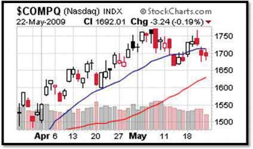

You can apply your knowledge of findings from the field of behavioral finance in a number of ways. First, you can be alert to and counteract your natural tendencies toward investor bias and framing. For example, you can avoid availability bias by gathering news from different sources and by keeping the news in historical perspective.
A long-term viewpoint can also help you avoid anchoring or assuming that current performance indicates future performance. At the same time, keep in mind that current market trends are not the same as the past trends they may resemble. For example, factors leading to stock market crashes include elements unique to each.
Ambiguity aversion can be useful if your uncertainty is caused by a lack of information, as it can let you know when you need to do more homework. On the other hand, aversion to ambiguity can blind you to promising opportunities.
Loss aversion, like any fear, is useful when it keeps you from taking too much risk, but not when it keeps you from profitable opportunities. Using knowledge to best assess the scope and probability of loss is a way to see the loss in context. Likewise, segregating investments by their goals, risks, liquidity, and time horizons may be useful for, say, encouraging you to save for retirement or some other goal.
Your best protection against your own behavioral impulses, however, is to have a plan based on an objective analysis of goals, risk tolerance, and constraints, taking your entire portfolio into account. Review your plan at least once a year as circumstances and asset values may have changed. Having a plan in place helps you counteract investor biases.
Following your investment policy or plan, you determine the capital and asset allocations that can produce your desired return objective and risk tolerance within your defined constraints. Your asset allocation should provide diversification, a good idea whatever your investment strategy is.
Asset bubbles and market crashes are largely a matter of timing. If you could anticipate a bubble and invest just before it began and divest just before it burst, you would get maximum return. That sort of precise timing, however, is nearly impossible to achieve. To time events precisely, you would constantly have to watch for new information, and even then, the information from different sources may be contradictory, or there may be information available to others that you do not have. Taken together, your chances of profitably timing a bubble or crash are fairly slim.
Market timingThe practice of basing investment strategy on predictions of future market changes or on asset return forecasts. was defined in Chapter 12 "Investing" as an asset allocation strategy. Because of the difficulty of predicting asset bubbles and crashes, however, and because of the biases in financial behavior, individual investors typically develop a “buy-and-hold” strategy. You invest in a diversified portfolio that reflects your return objectives and risk tolerance, and you hold on to it. You review the asset allocation periodically so it remains in line with your return and risk preferences or as your constraints shift. You rely on your plan to make progress toward your investment goals and to resist the temptations that are the subjects of the field of behavioral finance.
As you read in Chapter 12 "Investing", a passive investment strategy ignores security selection by using index funds for asset classes. An active strategy, in contrast, involves selecting securities with a view to market timing in the selection of securities and asset allocation.
An investment strategy based on the idea that timing is everything is called technical analysis. Technical analysisA process of estimating security value solely on the basis of past performance as an indicator of future performance. involves analyzing securities in terms of their history, expressed, for example, in the form of charts of market data such as price and volume. Technical analysts are sometimes referred to as chartists. Chartists do not consider the intrinsic value of a security—a concern of fundamental analysisThe process of estimating security value by evaluating past performance and macreconomic and industry factors.. Instead, using charts of past price changes and returns, technical analysts try to predict a security’s future market movement.
Candlestick charting, with its dozens of symbols, is used as a way to “see” market timing trends. It is believed to have been invented by an eighteenth-century Japanese rice trader named Homma Munehisa.Gregory L. Morris, Candlestick Charting Explained: Timeless Techniques for Trading Stocks and Futures (New York: McGraw-Hill, 2006). Although charting and technical analysis has its proponents, fundamental analysis of value remains essential to investment strategy, along with analyzing information about the economy, industry, and specific asset.
Figure 13.10 A Candlestick Chart Used in Technical AnalysisCourtesy of StockCharts.com, http://stockcharts.com.
Technical analysts use charts like this one, showing the NASDAQ’s performance for April and May 2009. Each symbol annotating the graph, such as the shaded and clear “candlesticks,” represents financial data. Chartists interpret the patterns they see on these charts as indicators of future price moves and returns as driven by traders’ financial behavior.
Fraud is certainly not an investment strategy, but bubbles attract fraudulent schemers as well as investors and speculators. A loss of market efficiency and signs of greater investor irrationality attract con men to the markets. It is easier to convince a “mark” of the credibility and viability of a fraudulent scheme when there is general prosperity, rising asset values, and lower perceived risks.
During the post–World War I expansion and stock bubble of the 1920s, for example, Charles Ponzi created the first Ponzi schemeA pyramid scheme practiced by Charles Ponzi in Boston during the 1920s. The term is now commonly used to describe a pyramid scheme., a variation of the classic pyramid schemeA fraud in which “returns” are created by new deposits rather than by real investment earnings.. The pyramid scheme creates “returns” from new members’ deposits rather than from real earnings in the market. The originator gets a number of people to invest, each of whom recruits more, and so on. The money from each group of investors, however, rather than being invested, is used to pay “returns” to the previous group of investors. The scheme is uncovered when there are not enough “returns” to go around. Thus, the originator and early investors may get rich, while later investors lose all their money.
During the prosperity of the 1980s, 1990s, and 2000s, the American financier Bernard Madoff notoriously ran a variation of the Ponzi scheme. His fraud, costing investors around the world billions of dollars, lasted through several stock bubbles and a real estate bubble before being exposed in 2008.
Fraud can be perpetrated at the corporate level as well. Enron Corporation was an innovator in developing markets for energy commodities such as oil, natural gas, and electricity. Its image was of a model corporation that encouraged bright thinkers to go “outside the box.” Unfortunately, that ethos of innovation took a wrong turn when several of its corporate officers conspired to hide the company’s investment risks from financing complicated subsidiaries that existed “off balance sheet.” In the fall of 2001, with investor confidence shaken by the dotcom bust and the post-9/11 deepening of the recession, the fraud began to unravel. By the time the company declared bankruptcy, its stock value was less than one dollar per share, and its major corporate officers were under indictment (and later convicted) for fraud.
How can you avoid a fraud? Unfortunately, there are no foolproof rules. You can be alert to the investment advisor who pushes a particular investment (see Chapter 14 "The Practice of Investment"). You can do your own research and gather as much independent information on the investment as possible. The best advice, however, may come in the adage, “If it seems too good to be true, it probably is.” The capital markets are full of buyers and sellers of capital who are serious traders. The chances are extremely slim that any one of them has discovered a market inefficiency undiscoverable by others and exploitable only by him or her. There is too much at stake.
Market timing, or the ability to predict bubbles and crashes, is nearly impossible because of discrepancies in the
Asset bubbles are often accompanied by an increase in investor fraud due to the